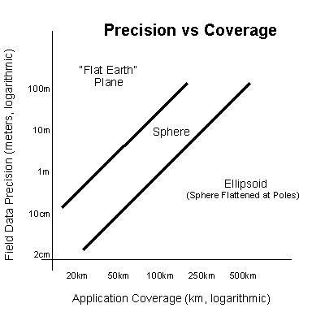
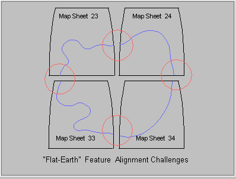
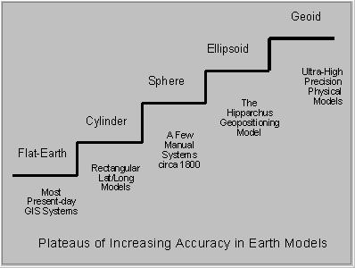

Homo sapiens rose up from the steaming swamps and came out from their dank caves, ascending to prominence far above other primates. Simply, the species achieved dominance through the development and application of tools. Eventually, with effective tools, man became the ruling species on the planet.
The first tools were primitive devices to support hunters and gatherers of food. Later, base components were devised to build newer, more complex and powerful tools. For example, the simple wheel provided a base for an incredible variety of mechanisms that serve us well today.
Millennia later, man fashioned a new form of tool - computers and their programs. These new tools, forged from the logic of reason (rather than bone, wood and metal), were designed to process "information". Here also, the creative mind of man constructed flexible elementals (like the wheel) for use by others to build even greater mechanisms.
In more recent decades, these new tools have become commodities. Simple and easy to use, second generation tools like spreadsheets have enabled huge numbers of people to solve problems. Like the wheel, these tools will serve for years to come.
The material you are about to read describes a radically new tool. This elemental tool allows computer application developers to create a whole new generation of applications. The resultant family of products that can be built employing this elemental is awesome. For the first time, a tool is provided that actually models our planet of origin. The genesis of things to come has begun. We will help man truly and accurately determine the location of all things in relation to other things on the planet Earth.
The application of this tool is limited only by the imagination and creativity of people like yourself. Given the lessons of history, there will be no constraint.
Hipparchus was developed and tested over a twelve year period. Founded in formal studies of the shape of the Earth, these years of applied research and software engineering have resulted in the product we call Hipparchus. The name belongs to the ancient Greek mathematician who was first able to predict distances anywhere on the globe. He made angular measurements on the face of the Earth and then used those angles to calculate distances.
Our product has been in active use in applications for over ten years. The Hipparchus Libraries are packaged as a cross-platform tool set for computer application developers and is marketed worldwide by Geodyssey Limited.
Simply stated, Hipparchus is a processor of geographic location information. It is a library of functions that a developer can use to build applications that deal with location information. The library functions provide for the creation and logical manipulation of spatial objects that model features on or near the surface of the Earth.
Take a few minutes now to scan through this Tutorial to get a grasp of the product and some of its potential applications.
Until now, there have been major problems with systems that handle geographic information. These include the following:
The following is a brief review of these issues.
Most primitive views of positional information (maps) ignored the true
shape of the Earth, pretending that the Earth was flat. Even the majority of
modern spatial systems continue this practice, performing spatial
calculations in one or other of several "Flat-Earth" planar projections.
Depending on the projection used, distance calculations of 200 yards may have
a discrepancy of an inch or so. Distance calculations of 10 miles may be out
by as much as 3 feet.
Figure 1 illustrates the challenge of maintaining accuracy when modeling
items over an area of coverage. The diagram assumes that distance calculations
will be needed that span the area of concern. The diagram also assumes
that the computational precision must be at least an order of magnitude
better than the field data, else the computational engine may inject its
own "noise" into your calculations.

Figure 1: Precision vs Coverage
As you can see from Figure 1, one does not have to
consider very large distances before precision issues become significant. For
example, for municipal engineering systems working with "Flat Earth"
coordinates, cities spanning five miles will have potential discrepancies of
up to ten inches, even though the precision needs are usually better than an
inch.
Similarly, for state-wide road networks, systems using the "Flat-Earth"
model will have distortion problems. Here, with distances in the range
of a hundred miles or so, there exist potential discrepancies of ten yards
or more, even though the precision needs are usually much higher.
For larger problems (for example, pipeline construction projects or
environmental studies spanning large areas), clearly, the ellipsoid model
is needed if distortion is to be avoided.
This is the stuff of computational geodesy. Much has been written on
this subject, most of which might seem bewilderingly complicated to you
the application developer. The bottom line however is that you must be
aware of these difficulties and figure out some method of adjusting distances
or flagging the discrepancies to your application end users.
Happily, with Hipparchus, you can sidestep this whole problem.
Hipparchus works with your data on the ellipsoid model of the Earth.
Thus, precision can be maintained with ease for even your very highest
precision needs. So, even if your application has only modest precision
requirements, you will never have to worry if that should change. And,
best of all, you won't need to go back to school for a master's degree
in computational geodesy!
The forgoing distortion problems are not new. Cartographers have wrestled
with them for millennia, working within the limits of the tools of the
day. Now computer application developers are the ones worrying!
Computational geodesy has been around for decades, since before the
age of computers. Surveyors, geophysicists and cartographers alike learn
it nowadays as the very heart of their science. The mathematical methods
are known by which one can calculate accurately distances on the face of
the Earth. And many methods are known for projecting that which is round
(like the Earth) onto something that is flat (like a map).
Before computers, there were significant limitations on just how many
calculations you could afford to do for a particular application. Solutions
were generally based on angular measurements such as latitude and longitude.
Cumbersome complex formulas were required. To make them at all usable in
practice, they had to be evaluated using logarithmic tables. Users such
as sea captains could thereby add and subtract instead of multiply and
divide. They would look up these tables with their angular measurements,
combining intermediate results by hand addition and subtraction to come up
with the answers as to where they were.
Then along came computers. Now you could calculate those same formulas
ever so much faster. At least in principle. Because when you got right
down to practical problems such as projecting a part of the world onto
a graphics display or finding out if two lines intersect, it just didn't
work out. The process took too long to be practical. And it was fraught
with all kinds of restrictions brought on by the numerical instability
of the formulas themselves (try takinging the tangent of 90 degrees!).
So it was back to the "Flat-Earth" model, where such time-consuming
calculations and representation problems are largely ignored!
Not so with Hipparchus. Instead of using cumbersome angular measurements
to represent what's where, Hipparchus uses direction cosines and modern
vector algebra to navigate. This kind of math is far faster, is much less
complex and has fewer numerical instabilities.
Most computational models of the Earth do not know how to connect up
the pieces of objects that span two or more adjacent map sheets. For example,
we might be trying to model a buried cable that exits from one map and
is continued on an adjacent map. Because of the "Flat Earth" distortions
built into the map-making process, an exact match-up of the two cable "ends"
will rarely occur. Figure 2 illustrates graphically the problems that can
occur in trying to match up the features of adjacent map sheets. An experienced
worker in the field can usually deduce that they are the same cable. Automated
systems have a much more difficult time, however.

Figure 2: Conventional Representation of Geographic Features
This difficulty in tying together the pieces of objects that cross the
boundaries of maps is the nemesis of conventional information systems.
Not only are there distortions in the numerical representations of such objects,
but you're not even sure that the pieces belong together for processing by
your application. If you were to try to get around this by choosing maps with
wider coverage, you will merely increase the distortion and still not
guarantee that your objects would never cross over to another map sheet.
Conventional information systems take great pains to overcome this
fundamental problem in representing that which is round as something flat.
Of course, computers don't actually work with map sheets, they work
with numbers. So why did the designers of so many conventional systems
continue to work with the map sheet analogy when attempting suitable system
solutions?
Good question! One answer is that the map sheet analogy provides an
intuitive way to index the data. When handling large amounts of data, computers
need an efficient means of indexing data so that the search for a particular
piece of it can be reduced to a manageable task. Just as anyone would think
of organizing a telephone directory alphabetically, it occurs to designers
to organize their geographically related data on some basis having to do
with the location of the data. So now if you were to come up with the geographic
location of an object, you could figure out what part of the database should
be accessed to find out all about it. In other words, if you supplied the
coordinates of the item in terms of, say latitude and longitude, you could
take those coordinates apart arithmetically and find out which "map sheet"
has the data. This idea is based on the gentleman's agreement that "map
sheets" will have some kind of regular division into latitudes and longitudes.
OK so far.
The problem is that the computer is a linear device. Its memory
and disks are addressed linearly, not by looking for some latitude
and longitude or even some "Flat-Earth" x and y. So when you try to organize
your spatial index on the basis of a regular division of the Earth's surface,
you will be bound to favor one direction over another. This means that
even if you did find the data contained on one "map sheet", when you move
to its neighbor you are just as likely to be "going against the grain"
as with it. Too bad. Best to avoid this and restrict your objects to those
that will fit within the "map sheet file drawer". And don't attempt to
access a large volume of data; it may take all day!
Now consider Hipparchus. With Hipparchus, you organize your data into
cells having no reference to any particular "regular" division of the Earth.
Using the properties of the Voronoi cell structure, you will be able to
access your data far faster than by any other known method. You will be
able to tailor your cell structure to accommodate the actual density of
data in your application. Where your data is sparse, you can use big cells;
where it's dense you can use little ones.
Notwithstanding all of the above, the most important shortcoming of
existing systems may well be their arbitrary requirements with respect
to database and graphical user interfaces.
Most existing systems require that your data be committed to their specific,
arbitrary, proprietary physical and logical data models. Hipparchus frees
you from this constraint. Using Hipparchus, you can access geographic data
from any database. And if you harness the Hipparchus spatial indexing
scheme, you can do this more efficiently than by any other means.
Most existing systems also require use of specific, arbitrary and sometimes
even proprietary graphical user interfaces. Hipparchus relieves this constraint
by carefully avoiding direct references to the graphical interface, leaving
you free to bind the application to the graphical user interface of your
choice.
By contrast then with existing systems, Hipparchus offers a truly
open approach to the implementation of geographical information
systems.
As with the majority of significant computing solutions, Hipparchus
is based on a solid foundation of mathematics and software engineering.
The theoretical elements of the product are based on formal computational
geodesy. The precision made possible by the use of the ellipsoidal model
removes countless restrictions. The vector algebra is the same as that
used in ray-tracing graphics rendering software. The Voronoi cell indexing
method, although applied for the first time to the rounded surface of the
Earth, is well known to geographers everywhere. The unique internal notation
and product design provides impressive speed of operation on even the smallest
of computers. The library of application functions has been crafted by
developers for use by developers using the principles of structured programming
and object orientation. And, finally, its fully re-entrant function repertoire
make it an unusually powerful tool for development of your multi-threaded,
multi-tasked, multi-user server applications!
The Hipparchus product provides the following:
In general then, Hipparchus was designed to make the development of geographic
applications a fast, routine process. It was also designed so that the
resultant applications will be efficient, accurate and easily maintainable.
Your end users will be impressed by both your speed of development and
the speed and precision of your work.
Your flexibility of design is unsurpassed. You won't have to worry about
the shape of the Earth nor the span of objects. Hipparchus provides a general
solution to the modeling of these things. Processing rates will be constrained
mainly by your access to disk, rarely by the calculations involved. With
its superior spatial indexing, Hipparchus can reduce disk access times
to a minimum. Interactive object manipulation and display will be unhindered
by arbitrary "map sheet" partitioning of your data. Your clients will be
able to zoom and pan freely throughout their data, calling for analyses
never before thought practical.
The special characteristics described above make Hipparchus the geographics
tool set of tomorrow. With this technology, developers can enable clients
to answer such questions as:
Applications for the package are everywhere. Consider these:
All of these disciplines are faced with questions of "Where is this
with respect to that?". Hipparchus provides application developers in these
fields with a powerful new tool set to help find the answers.

Figure 3 illustrates the plateaus of increasing sophistication of
mathematical models of the Earth, starting with the planar or "Flat Earth",
which is the simplest. Despite its known problems, most existing systems use
this approach. For example, property boundaries are commonly recorded and
related using this technique.
Just above the "Flat-Earth" model, we have the cylindrical model of
the Earth. This corresponds roughly to a Mercator view and is used mainly
for global models. Latitude and longitude are considered as rectangular
coordinates (but with polar regions excluded). An example of the use of
such a model is provided by the Digital Chart of the World CD-ROM
data source (see APPENDIX B - References).
The next level in which the Earth is considered to be a perfect sphere
is more realistic but to our knowledge has been used only infrequently
in the past for specific survey projects, such as the layout of Washington,
DC, USA.
The ellipsoid modeling level is much better and is now the basis for
modern practical geodesy. For the first time, Hipparchus implements this
model as the basis for a generalized high-performance computing engine.
The last level shown is the Geoid model. This is an ultra-high-precision
physical model of the Earth that takes into account local concentrations
of mass (such as the Himalayas) but excludes dynamic gravitational factors
(such as the tides). The model specifies a hypothetical surface that would
result if the Earth were covered entirely by an ocean yet had the same
uneven distribution of mass as the real Earth. The Geoid has an irregular
surface which is not a surface of revolution. Although it is the
most accurate model of the Earth, it is used only rarely in specific studies
such as plate tectonics, where continental drifts of millimetric dimension
are important.
The speed and efficiency of Hipparchus can unleash the potential of
knowledge workers as never before.
With low cost computers, workers can now rapidly process huge volumes
of data, interactively unlocking its geographic secrets, then rendering
its meaning to others using graphics understandable to all.
Hipparchus was designed specifically to aid developers in constructing
computer applications that deal with the geography of things. Hipparchus
is a truly "open" geographic systems component. It is both accurate and
efficient. Geographic calculations are precise. The spatial indexing method
provides unsurpassed efficiency in the handling of large volumes of data. The
tool set is cross-platform and can be applied in a wide number of
disciplines. It is especially effective in interactive and multi-threaded
client-server applications.
Complexity of Calculations
Restricted Representation Of Objects
Arbitrary Database and Geographical User Interfaces
The Essence of Hipparchus
Potential Applications
Computational Sophistication
Figure 3: Plateaus of Sophistication
Speed and Efficiency
Summary
Preface |
Top of Chapter |
Next Chapter